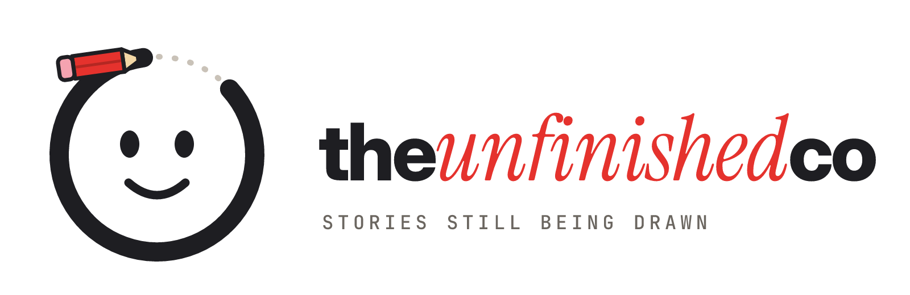
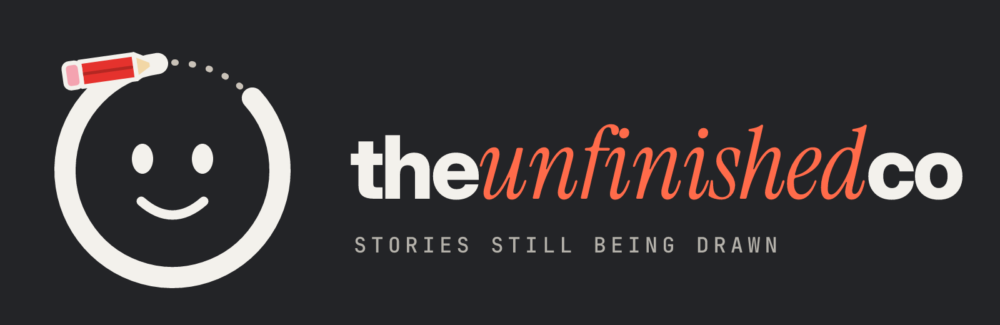
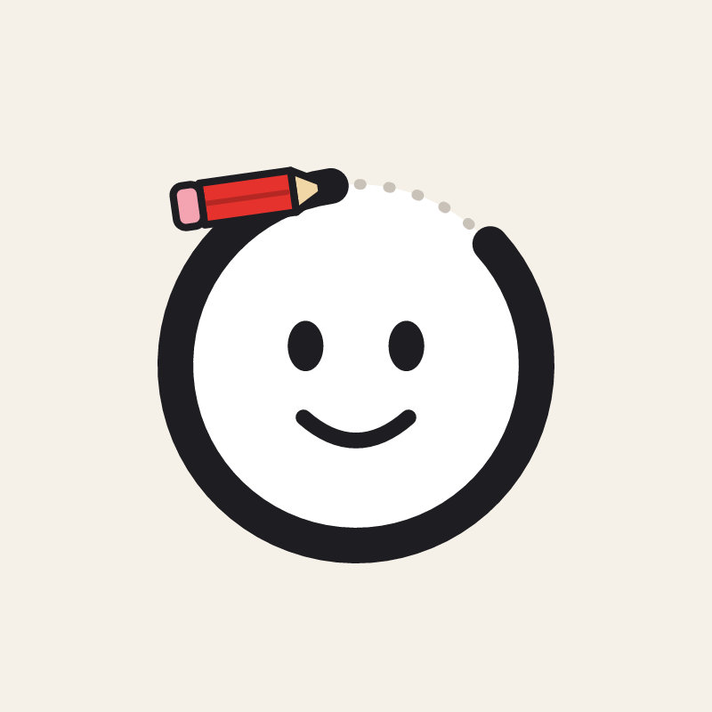
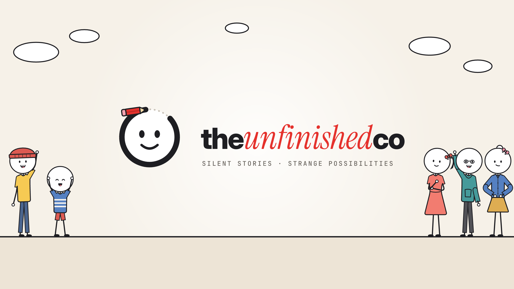

Spline keys
Keys form a monotone cubic spline: they ease in at the first key, pass through middle keys without stopping, and never overshoot. Dashed: the same keys with "ease": "linear".
Brand & video system · v1 stick · v2 flat →
One stickman. One strange possibility.
Silent, minimalist stickman Shorts and Reels about hypotheticals, twists and thought experiments.
White round heads and black ink, now with a little colour: clothes, a bow for the women, soft outlined sets. Every frame is
drawn in code by the whatif-flat engine in its stick style; the same scene file renders in the v2 flat look.
The player on the right is that engine, running in your browser.
scenes/stick-hero.json rendered live by v2/engine/scene.mjs, stick styleA stickman's head that is still being drawn: the ink outline stops short, a red pencil is mid-stroke, and a dotted guide shows the part that isn't finished yet. The brand in one picture: stories still being drawn.




Keep empty space around the mark equal to half the head's diameter. Minimum size: 32 px for the mark, 160 px wide for the lockup.
Ink outline and face, white head, red pencil: the only red in the mark. On dark grounds use the dark mark (cream ink, charcoal head).
Don't close the circle, move the pencil off the stroke end, recolour the pencil per episode, or put the mark inside a video frame. Videos end on a hard cut, with no logo sting.
White stage, black ink, and one accent per episode, spent on the thing that matters: the countdown, the bricks, the highlighted word. These are the brand and UI colours; the characters' clothes and the soft sets have their own palette, further down.
The badge shows contrast on white: Text means any size, 24px+ means large text only, Fill means never use it for text.
Headlines in Inter 600 with tight tracking, one phrase in Instrument Serif italic, labels in JetBrains Mono: the same system as hussnakhtr.com. On screen in the videos, the engine draws heavy Inter Display headlines; its sizes are pixels on the 1080 × 1920 frame, with the minimums from the safe-zone research.
The v1 stickman, dressed: a tee, hoodie, robe or apron in a soft colour, trousers or a skirt, shoes, a beanie or glasses. Long hair, a bob, a bun, a ponytail or pigtails make a woman or girl with a little bow (turn it off or recolour it). Heads stay white and hair stays ink. Copy the JSON straight into a scene file.
One frame of the hero scene, as the engine built it. Hover a layer to find it; untick it to hide it. The same file exports to Illustrator, Figma or Inkscape with --layers.
Dot eyes and a single-line mouth, as always; brows only when a moment needs them. Then all 35 named poses, shared with the flat rig: stand, wave, point, sit, plus hands on hips, arms crossed, reach up, facepalm, clap, dance, kneel, crouch, run, jump, sitting on the floor and lying down.
Sixteen generated sets in the stick look: soft colour, a warm ink outline on every shape, no vignette. New in v3: kitchen, bedroom, café, hospital, bus, rooftop, classroom and living room. Night sets turn lavender and dusty rose rather than black, so the ink figures still read.
Sets and props are drawn at real size for an actor at scale 1: a character stands 800 px tall (1.7 m), so 1 m ≈ 470 px. Frame a wide shot with camera zoom (down to 0.4), never by shrinking the actors. Every thumbnail above is zoom 0.5 with the actor at scale 1.
The same prop library as v2, outlined and softened. Held props attach to a wrist and follow the forearm; scene props stand in the set at real size.
The stick world is light and warm, so black ink always reads: cream walls, pale wood, muted sage and one or two brighter accents per set (a red lantern, a green plant). Clothes take the shared cloth names, softened 12% toward white in this style. Select a chip to copy its name.
WORLD.stick, props.mjs)Each loop is one do action on the same character, at the full 24 fps with idle life (breathing, weight shift, blinks) underneath.
The v3 engine moves like hand-keyed animation: spline keys, overlapping action, actions that blend in and out, a walk whose feet stay planted, and real shot transitions. Nothing procedural is random from frame to frame and nothing oscillates above 5 Hz, so nothing jitters. Below: examples/motion-demo.json live in stick style, beside the MP4 the renderer made from the same file.
Each chapter is one field in the scene file.
When a pose changes, the body leads and the parts follow a beat later, so a move ends with follow-through instead of a stop. Untick to see the same keys with no drag.
Keys form a monotone cubic spline: they ease in at the first key, pass through middle keys without stopping, and never overshoot. Dashed: the same keys with "ease": "linear".
Every action with from/to mixes in and out over blend seconds (0.2 by default, 0.45 for wave and reach), so nothing snaps. Dashed: no blend.
Footsteps are planned in world space, so a standing foot never slides. Travel eases in over the first half step and out over the last; the cadence comes from the distance and stride; the body bobs once a step with a small head counter-bob.
{"act": "walk", "from": 3.1, "to": 4.9, "dx": 520}
Push and whip get a shutter-length motion blur automatically.
Every video posts to YouTube Shorts, Instagram Reels and TikTok, so text has to clear all three apps' buttons and captions, and stay up long enough to read with the sound off. The engine enforces both: it fits, wraps and clamps every line into the combined safe rect, and --check flags any text that leaves too soon.
text.mjs, the code that renders the videos.read = min(7, max(1.2, 0.375 × words, characters ÷ 17) + 0.5 with a new visual + 0.5 for a 3+ digit number)
The text must be readable for that long: at least 90% opaque and within 2% of its final size and place. The entry animation (6 frames here) does not count.
| Rule | Value | Source |
|---|---|---|
| Safe rect | x 120–888, y 288–1248 (768 × 960). Its centre is x 504, not 540 | G3, G4, M1, T2 |
| Rail notch | A text box whose bottom passes y 840 must end by x 780 (TikTok's button rail) | T2 |
| Per platform | Top / bottom / left / right UI: YouTube 288 / 672 / 48 / 192 · Reels 269 / 672 / 65 / 65 · TikTok 240 / 660 / 120 / 120, rail 300 wide from y 840 | G3, M1, T2 |
| Bottom third | Nothing readable below y 1248: art only | all three |
| Bands | hook 288–640 · stage 640–1000 · caption 1000–1248 | judgement on B1 |
| Sizes | headline ≥ 84 px (target 108) · body and bubbles ≥ 52 (64) · labels ≥ 36 (44) | B1, A1 |
| Lines | ≤ 3 per block, ≤ 2 per bubble, about 25 characters per line | B1 |
| Reading time | the formula above: 160 wpm, 17 characters a second, never past 7 s | B1, N1, N2 |
| Gaps | between two texts in one slot: exactly 2 frames or ≥ 0.5 s; an empty pause ≥ 1 s | N3, B1 |
| Hook | readable by frame 6, ≤ 6 words, in the hook band | R3, T4 |
| Faces | text and bubbles never cover a head; bubbles point at the mouth | B1 |
No platform publishes a safe zone for organic posts; all three publish one for ads, which run in the same feed with the same buttons plus a CTA. The full research: stickman-videos/RESEARCH-safe-zones-text.md.
For the channel's own pages and link-in-bio: plain custom elements in js/components.js, styled by the tokens.
<wi-episode-card number="01" title="What If Your Shadow Stopped Copying You?"
duration="36" accent="red" cover="assets/covers/cover-01-shadow.png"
src="media/01-shadow.mp4"></wi-episode-card>The ten premises, rewritten for story, rendered in the stick style by the v3 engine (the flat renders are on the v2 page). Select a cover to play it.
The archive: ten silent episodes, 33–38 seconds each, rendered by the original canvas kit before v3. That kit is retired; Series 2 above is the current pipeline. Select a cover to play it.
Rendered with the original canvas kit (tools/assets.mjs, now archived), in the pre-v3 bare-stick look.
tokens.json is the source of truth. node tools/build-tokens.mjs regenerates css/tokens.css and js/tokens.js. Select a row to copy its CSS variable.